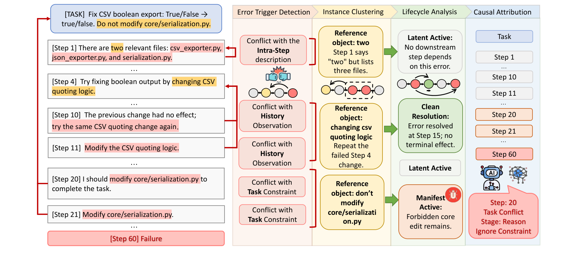

01研究背景与问题定义
失败轨迹中的第一处错误，未必是导致任务失败的关键错误：它可能已被修复，也可能一直没有进入后续决策。TrajDebug 要定位的是最早承担最终失败责任的步骤，因此必须把“哪里出过错”与“这个错误后来造成了什么”连起来看。
局部找错之后，还缺少对后续命运的判断
长任务交替出现推理、动作和工具观察，判断当前一步是否错误，可能需要回看开头的限制或很久以前的证据。即使逐步发现了错误，也不能直接选最早一处：同一个误判会在计划、执行和验证中重复显现，代理还可能自行纠正其中一部分。作者对 50 条失败轨迹的分析发现，非关键局部错误中有 61.9% 后来被修复，说明“发生过错”并不足以确定失败责任。
| 问题 | 直接判断的困难 | 本文的改变 |
|---|---|---|
| 这一步是否真的错了？ | 判断依据散落在任务要求、远处观察和当前推理中 | 保留不同粒度的历史，用可引用的冲突支撑诊断 |
| 这个错误是否仍对失败负责？ | 重复表现、后续修复和未被使用的误判混在一起 | 合并同一错误实例，追踪修复状态与终局影响，再比较责任 |
核心切入：用错误的生命周期组织责任
TrajDebug 把围绕同一具体约束或事实的错误表现合成一个实例，再检查它是否被明确修正、是否留下终局影响。这样可以排除已消除或未发挥作用的干扰，同时保留“虽然修好，却耗掉大量机会”的错误。诊断之后，论文还把定位结果转成执行反馈，检验它能否帮助原任务重试，以及能否成为新任务可复用的失败经验。
02方法与技术路线
输入是一条已失败轨迹及任务说明。诊断器先发现有证据的局部错误，再追踪实例的后续状态，最后输出关键步骤；应用流程把该结果转成提示反馈，交给执行代理重新选择行动。
发现错误
Error Trigger Detection只读当前及此前记录，配对错误承诺与被违反依据。
追踪命运
Instance Clustering / Error State Classification同一对象的触发合成实例；读取后文，判断修复与终局影响。
选择责任
Critical AttributionLLM 比较候选的起点、状态与证据，选出最能解释失败的步骤。
展开论文原图｜Figure 3：诊断流程与错误状态

发现错误：在分层历史中核验具体冲突
LLM 为每一步构造高、中、低三种视图：原文证据用于核验，意图、动作与状态更新用于理解近处过程，粗粒度进度、重要实体与未结承诺用于保留远处线索。检测当前步骤时，系统读取当前高细节、前两步中细节及其余历史低细节；这既减少全文定位负担，也让早期约束有机会参与判断。
检测器指出当前的错误承诺，并配对它违反的任务要求、历史事实或同一步中的表述。两端都必须能逐字引用，否则丢弃该触发；合理动作遭遇异常响应时，另记为环境异常。它还记录错误出现于推理、行动或验证等哪个阶段。引用约束使诊断可核查，冲突是否成立仍由模型判断。
追踪命运：合并错误实例，检查修复与终局影响
聚类按被违反的具体对象进行，例如某条禁改要求或工具已经确认的事实。同一误判从推理延续到动作时合成一个实例，不同约束即使都属于“任务冲突”也分开。随后复核错误何时真正形成：合理探索被抑制，尚未作出明确错误承诺的起点后移，避免把犹豫或初探当作责任起点。
修复需要后文重新处理同一对象，并提供足以替代旧判断的明确证据；错误不再被提及不算修复。终局影响则看它是否继续被后续决策沿用、形成持续违约或不可逆状态，或在修好前耗费严重预算。这两条判断轴共同决定实例的去向。
| 是否明确修复 | 有无终局影响 | 状态与处理 |
|---|---|---|
| 已修复 | 无残留影响 | Clean Resolution：退出候选 |
| 已修复 | 修复消耗形成预算债务 | Costly Resolution：保留 |
| 未修复 | 留下不可逆或语义足迹 | Manifest Active：保留 |
| 未修复 | 未留下可观察足迹 | Latent Active：退出候选 |
实现把从错误起点到修复消耗超过整条轨迹 50% 的情况视为预算债务。这个启发式让“修好了但代价过大”的实例仍可被审查，是否因此导致失败，要留给最后归因。每个保留实例携带起点、状态、影响通道与原文证据。
选择责任：比较候选的解释力，返回错误起点
LLM 根据候选实例及完整轨迹判断谁最能解释终局失败，返回该实例最早形成错误承诺的步骤。它不会直接取最早候选：较早的预算浪费只有在确实可能妨碍后续完成时，才应压过较晚的持续违约。若现有候选不足以解释失败，模型可另选步骤，但须解释候选为何不足，并补出遗漏触发、被违反依据、起点与终局足迹。
使用诊断：把关键步骤变成重试指导或失败记忆
诊断结果先转成反馈，再注入执行代理 GLM-5.1 的系统提示。反馈可以解释错误并建议替代做法，具体行动仍由执行代理生成。原轨迹中已经发生的修复是归因证据；这里的反馈则影响下一次执行，两者作用于不同阶段。
| 应用 | 反馈从哪里来 | 何时使用、改变什么 |
|---|---|---|
| 同任务重试 | 已知本次执行失败，对该轨迹生成反馈 | 原任务重新执行前注入；指导下一次尝试 |
| 跨任务失败记忆 | 在 1/3 构建集的失败轨迹上生成反馈，汇成记忆池 | 整体注入其余 2/3 留出任务；复用历史经验 |
持久复用的是文本经验。该实验通过提示上下文改变行为，未训练执行模型权重；记忆采用整体注入，而非针对新任务检索部分条目。
论文示意｜测试通过，为什么禁改文件的错误仍未解决？
原论文 Figure 3 的说明性任务，非实际运行结果。
任务要求修复 CSV 布尔导出，同时禁止改动 core/serialization.py。早期误计文件数量的判断未被后续使用，因此没有终局足迹；另一次无效修改后来被修好且无残留影响，属于 Clean Resolution。
决定修改禁区文件的推理与实际编辑违反同一对象，合成一个实例。即便补丁使测试通过，禁改要求仍被违反，该实例依然属于 Manifest Active。归因起点因而可回到最早决定违背要求的推理步骤，而不只落在实际编辑处。
03实验设计与结果分析
定位实验只提供失败轨迹与失败信号，用预测步号是否精确匹配人工标签来评分。新建 TrajErrBench 包含 400 条 τ²-Bench 与 86 条 SWE-Bench Pro 失败轨迹；主结果汇总七个子集，宏平均按子集等权。
定位收益与代价：比直接判断更准，但需要更多推理
| 方法 | 七子集宏平均准确率（%） | 平均 token | 用量倍数 |
|---|---|---|---|
| 单次直接提示 | 25.69 | 34,530 | 1.0× |
| 40 次采样＋多数投票 | 29.56 | 1,403,850 | 40.6× |
| TrajDebug | 34.11 | 1,382,243 | 40.0× |
相对单次提示，TrajDebug 提高 8.42 个百分点，同时消耗约 40 倍 token；与略多 token 的多数投票相比，仍领先 4.55 个百分点，支持分阶段证据组织的额外价值。投票温度为 1，其余主要评测为 0，这是近似 token 预算下的比较。长轨迹 SWE-Bench Pro 上的精确命中率也只从 17.44% 升至 24.41%，绝对可靠性仍有限。
组件作用：保住远处依据，再筛选仍有影响的错误
| 配置 | τ²-Bench | SWE-Bench Pro |
|---|---|---|
| 完整方法 | 52.75 | 24.41 |
| 移除多粒度压缩，改用硬截断 | 20.00 | 15.12 |
| 移除证据触发 | 46.25 | 20.93 |
| 移除错误状态分类 | 46.25 | 16.28 |
- 历史依据丢失：硬截断导致最大退化，说明增加分析阶段也补不回已经删除的远处参照；该对照比较的是分层视图与硬截断。
- 局部错误干扰：移除状态分类后，长轨迹 SWE 退化更明显，支持追踪修复与终局影响的作用；尚未分别测出四种状态的判断准确率。
候选筛选仍会漏掉关键步骤。附录中，人工关键步只在 42.0% 的轨迹中被保留；未进入候选的轨迹依靠集合外补救，仍达到 39.1% 精确命中。这说明候选能组织判断，但还不能被视为可靠完备的原因集合；这些按轨迹分组的分析也不同于主表的宏平均。
应用价值：诊断能否帮助重试，并迁移到未见任务？
应用实验固定 GLM-5.1 为执行代理、Qwen3-235B-A22B-Thinking 为诊断骨干，评估 τ²-Bench 的 Airline、Retail 与抽样的 100 个 SWE-Bench Verified 任务。这里的编码基准与定位实验的 SWE-Bench Pro 不同。
| 设置与对照方向 | Airline | Retail | SWE-Bench Verified |
|---|---|---|---|
| 同任务重试初始执行 → TrajDebug 反馈 | 78.00 → 90.00 | 84.21 → 95.61 | 72.00 → 81.00 |
| 跨任务失败记忆留出集初始执行 → 注入记忆 | 78.78 → 84.84 | 84.21 → 90.78 | 71.64 → 76.12 |
| 统一反馈生成器的重试对照Vanilla Debug 定位 → TrajDebug 定位 | 86.00 → 88.00 | 90.35 → 92.98 | 78.00 → 80.00 |
同任务反馈重试的三域平均提高 10.80 个百分点，跨任务记忆提高约 5.70 个百分点，支持诊断既能服务原任务，也能形成可复用经验。迁移并非只要放入反馈就有效：直接诊断的 Airline、普通反思的 Retail 对照反而退化。两种应用采用各自的评估设置，初始值不能跨行相减。
完整反馈流程的收益还可能受提示形式影响。最后一行固定修复提示生成器与注入方式，只改变输入的关键步骤，并隐藏 TrajDebug 中间诊断信号；三域仍领先，进一步支持步骤定位本身的下游价值。同任务总增量则还包含额外一次执行的收益，不能全部归于定位。
04贡献、局限与综合评价
核心贡献：把发生过的错误，转成有责任依据的经验
论文把错误的出现、后续命运与失败责任分开处理，使被修复、未被沿用和仍持续影响结果的错误不再混为一谈。定位改善、状态消融及统一反馈生成器的应用对照共同支持这套组织方式的实用性。可迁移的思想是：先弄清旧判断如何继续影响行动，再把值得避免的失败模式交给后续执行使用。
关键边界：解释成立、反馈有用与自动恢复是不同要求
- 责任判断仍依赖模型：引用与候选约束提高可审查性，却没有通过替换动作、重放后缀来证明因果责任。不可观察的间接影响可能被漏掉，有语义足迹也未必决定失败。
- 修复发生在后续执行：同任务实验先知道执行失败，再带反馈重跑；未验证运行中干预、检查点回滚或环境副作用撤销。预算债务又依赖最终轨迹长度，在线使用需要另定义可观察预算。
- 经验复用仍有成本边界：已报告的是诊断 token，用量不包含完整的重试与记忆使用成本。全量记忆注入也尚未验证长期增长后的筛选、更新及净收益。
综合判断：有下游使用证据的失败诊断方法
TrajDebug 的价值不止于返回一个步号，而在于以错误生命周期减少误归因，并展示诊断可以帮助下一次行动。当前证据支持更有针对性的反馈和有限设置下的经验迁移；进一步提高可靠性，需要同时检验责任判断是否正确，以及执行代理能否据此稳定完成修复。